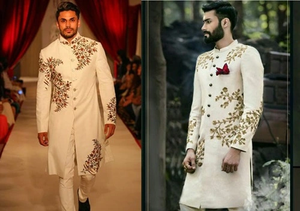

Sherwani
Sherwani is a four-piece cloth. This traditional attire is mainly worn by grooms on theirwedding day. A plain velvety kurta is paired with a loosely fitted pajama.The kurta is embedded with unique mirror work on it. The royal-looking sherwani is then paired with an elegant matching turban. This turban enhances the overall look of the sherwani. In addition, many men prefer adopting a matching dupatta on one side of the shoulder.